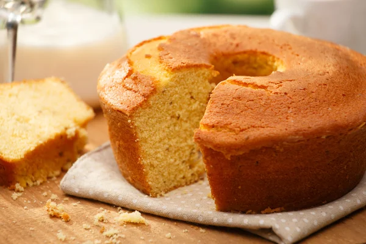

Bolo de Fubá
Voltar ao livro de receitas

Bolo de Fubá
INGREDIENTES
- 3 ovos
- 1 xícara de chá de óleo
- 2 xícaras (chá) de fubá
- 1 xícara de chá de leite
- 2 xícaras de chá de açúcar
- 1 xícara de chá de farinha de trigo
- 2 xícaras de chá de fubá
- 1 colher de sopa de fermento em pó
MODO DE PREPARO
- Peneirar os secos numa tigela e reservar.
- Bater os líquidos no liquidificador e juntar nos secos peneirados.
- Colocar em forma de anel, ou outra de sua preferência, untada e polvilhada com fubá.
- Forno aproximadamente 30 a 40 minutos.
Fonte:
https://receitas.globo.com/bolo-de-fuba-fofinho-5156535d4d3885447000004e.ghtml